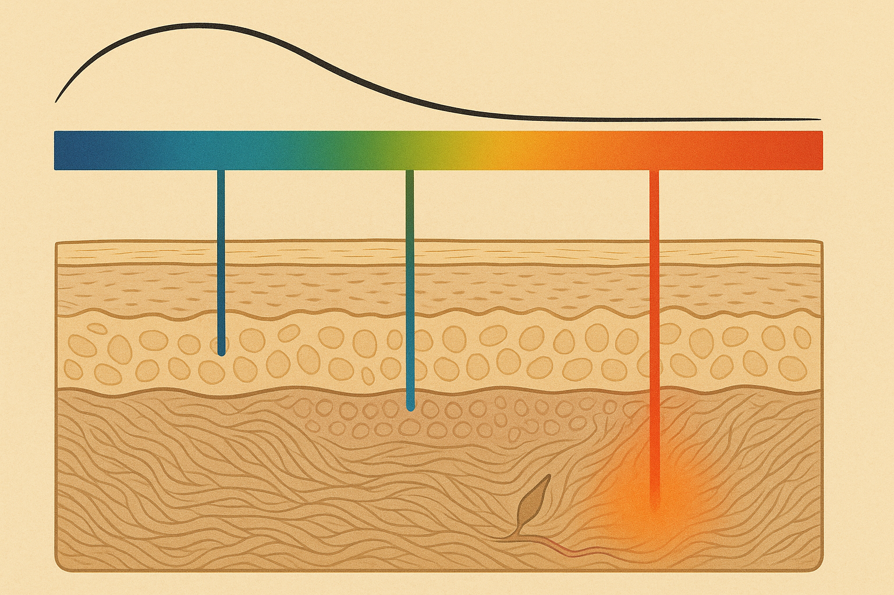
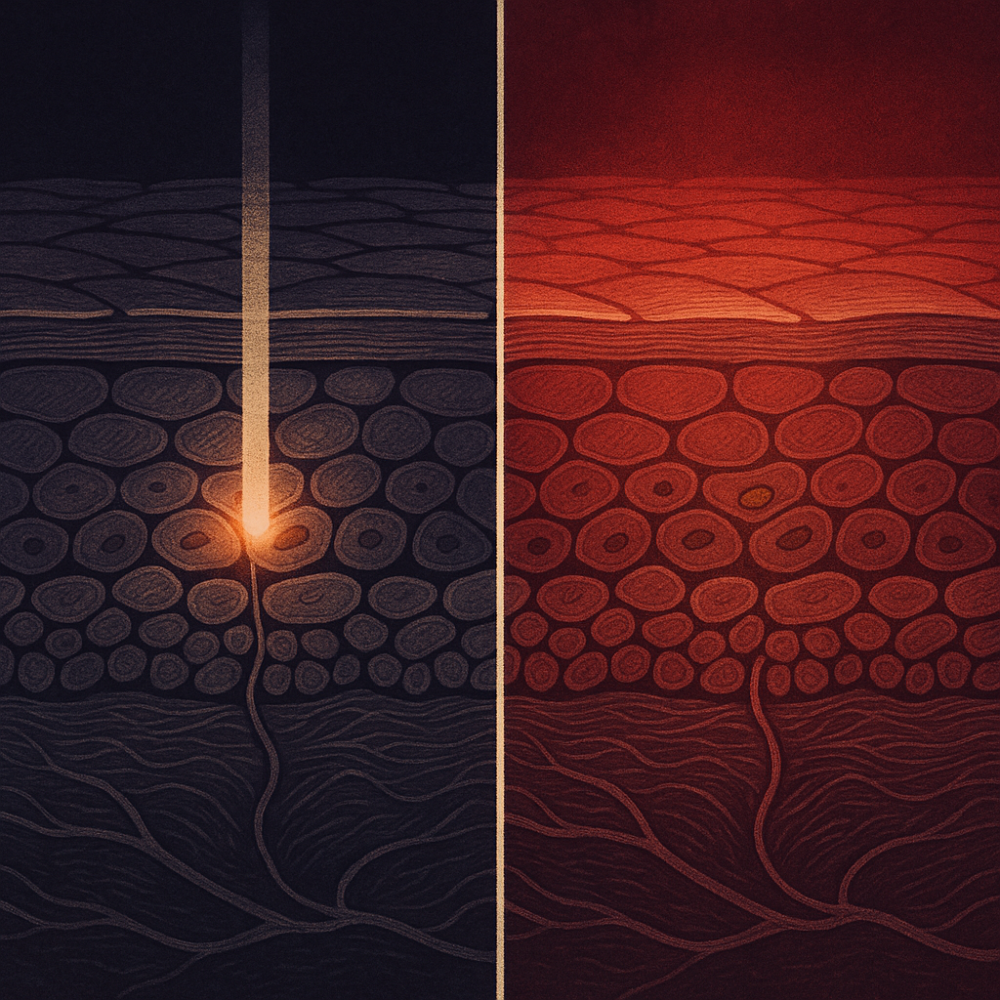
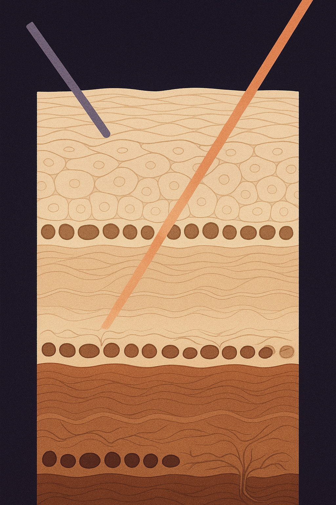

Review below. Reply approve to publish the Facebook post, or tell me edits.

If you have been warned off light treatments because of your skin tone, that warning was about a different machine.
That caution is real. It is also aimed at a specific category of device, and not the one most people assume.
So let us answer the blunt question first. Does LED light therapy work? There is a real, well-described mechanism behind it, the research is strongest for the appearance of fine lines and overall tone, and the effect is gradual rather than dramatic. It is closer to flossing than to a facelift. That is the honest version, and it is the same answer whether you are considering a clinic session or red light therapy at home.
Now the part almost nobody separates properly. Two very different technologies got filed under the same phrase, "light treatment". One works by deliberately heating a target in your skin. The other does not heat anything. That distinction is the most useful thing you can learn about light and skin.
> The short version, if you read nothing else. Melanin absorbs short wavelengths most. So make red (630 nm) your daily default, and keep blue (460 nm) short and occasional. True of any brand's device, not just ours.
Not all of them equally, and that is the whole point. Melanin absorbs light, and how much it absorbs depends enormously on the wavelength.
Here is the plain version. Melanin absorbs short wavelengths strongly and long wavelengths weakly, and the absorption falls off steadily as the wavelength gets longer. This is standard optical-properties-of-skin material, described across the dermatology and biomedical optics literature.
An everyday way to hold it in your head: sound in a room. Stand outside a house with music playing and you do not hear the high notes. You hear the bass. High frequencies get soaked up before they get anywhere; low frequencies carry through walls. Short wavelengths of light are the high notes. They get absorbed near the surface. Long wavelengths are the bass.
So in a mask running seven colours:
That is the whole physics lesson. Everything below follows from it.
IPL and many cosmetic lasers work on a principle called selective photothermolysis, set out by Anderson and Parrish in 1983. It is elegant, and it is worth understanding because it is the source of the risk.
The idea is that you choose a wavelength and pulse duration that a particular target absorbs more than the tissue around it. That target (called a chromophore) is usually melanin, in pigment and hair removal work, or haemoglobin, in vascular work. You then deliver enough energy that the target heats rapidly and is damaged. Deliberately. That is the mechanism. The treatment works because something is destroyed.
Now put more melanin in the surrounding skin. More of that energy is absorbed where it was never aimed, in the epidermis rather than in the intended target. Heat lands where you did not want heat. That is precisely why these treatments require trained assessment, tone-appropriate device selection and settings, test patches, and why they carry a documented risk of burns and post-inflammatory hyperpigmentation on deeper skin tones. The caution you were given was good advice.
LED photobiomodulation is a different category of thing. Low irradiance. Non-thermal. Non-ablative. There is no target being singled out for destruction, because destruction is not the mechanism. It is a broad, even, gentle exposure across the whole surface, at intensities far below anything that heats tissue. That is why published dermatology reviews of LED phototherapy generally describe it as suitable across the full range of Fitzpatrick skin types, I through VI, where IPL and laser require tone-specific assessment and settings.
Note the wording. Generally regarded as suitable. Not "safe for everyone". No device is that.
Worth recapping, because the skin-tone question tends to crowd it out.
Red is the mode most associated with collagen and fibroblast research: the appearance of fine lines, firmness and texture over weeks, not days. Alongside that, people generally reach for it for the look of more even tone and a bit of radiance, and for blue on breakout-prone stretches. Sensible expectations: subtle, gradual, cumulative, and dependent on doing it consistently rather than intensely. Ten minutes a day beats an hour once a fortnight.
Here is the practical bit, and almost nobody hands it out. It applies to any brand's device.
Melanin still absorbs short wavelengths most. LED is not thermal, so the burn mechanism is not in play, but if your skin is reactive and prone to post-inflammatory pigmentation, it makes sense to be deliberate about which colour you spend your ten minutes in.
That is a real protocol adjustment, not a marketing line. Ten minutes a day is the routine. Which ten minutes is the choice you get to make.
Plainly, before anything else.
LED does not treat melasma. It does not clear existing post-inflammatory hyperpigmentation. It does not lighten skin, and any brand selling it that way is selling you something it is not. What people most often report noticing first is glow and overall tone, somewhere in the 7 to 10 day range, with fine-line appearance much later, around the 4 to 8 week mark. Pigment is not on that list.
It also does not replace sunscreen. We will say this outright even though it does us no commercial favours: for pigment concerns, daily SPF does more for you than anything we sell. UV drives melasma and darkens existing marks. Sunscreen is the intervention with the evidence behind it.
Photosensitising medications matter for every skin tone. Some antibiotics (doxycycline, for instance), isotretinoin, and St John's wort all belong in that conversation. If you take one, ask your GP or pharmacist before starting any light device. Stop if your skin looks irritated. This is a cosmetic device, not medicine, and it is not a substitute for dermatological care.
One more honest note, since it is a common search. We do not have before-and-after photos to show you, because we are new. We would rather show you none than show you staged ones. When there are real ones from real customers, you will see them.
Genuine question, and we do read the replies. If you were ever told light therapy was not suitable for your skin tone, what reason were you actually given? The answers tend to be either very good advice about IPL or a flat "it is not for you", and those are not the same thing.
And if someone told you this whole category was not for your skin, send this to them. The distinction is worth having.
The Redermis Light Therapy Mask covers face and neck, with 70 chips across the face piece and 33 across the neck band, 309 emission points in total, seven colours including red at 630 nm, green at 520 nm and blue at 460 nm. Ten minutes a day, which is most of what makes red light therapy at home stick as a habit. It is $129 at our introductory, founding-customer price, here on the Redermis site.
And the honest part. Redermis is new. We do not have a wall of reviews yet, we are still earning them, and we are not going to invent any. Read the science above, weigh it against what you already know about your own skin, and decide for yourself.
CTA: If you want a closer look at the mask and the full spec, it is here on the Redermis site.
Image alt text: Editorial science illustration of how LED face masks and red light therapy at home work on darker skin tones: a melanin absorption curve sitting above a blue-to-red spectrum bar, with coloured light rays descending into a cross-section of skin, blue stopping at the pigment layer of the epidermis and red travelling deepest into the collagen of the dermis.
Hashtags: #ledlighttherapy #skincarescience #skintone #hyperpigmentation #redlighttherapy #skinlongevity #australianskincare

One of these machines is designed to damage a target in your skin. The other is not. Both get sold as "light treatment".
So, a genuine question before the explanation: has anyone ever told you light therapy was not suitable for your skin tone? We would really like to know what reason you were given. The answers we hear are either very good advice about IPL or a flat "not for you", and those are not the same thing.
Here is the difference. IPL and cosmetic lasers are heat-seeking tools. They pick a target in your skin, usually pigment, and heat it until it breaks down. Destroying that target IS the treatment. Deeper skin tones carry more melanin, so more of that energy can be absorbed where it was never aimed, which is exactly why IPL and laser need trained assessment, tone-appropriate settings and test patches.
An LED mask is closer to turning on a lamp in a room. Low irradiance, non-thermal, spread evenly across the whole surface. Nothing is singled out, because singling something out is not the mechanism. That is why dermatology reviews of LED phototherapy generally describe it as suitable across the full range of skin types, where IPL and laser require tone-specific care.
Worth saving, this bit, and it is true of any brand's device: melanin absorbs short wavelengths most. So if you pigment easily after irritation, keep blue (460 nm) sessions short and occasional, and make red (630 nm) your daily default. That one line is the whole practical takeaway.
Honest limits: an LED mask will not shift melasma or existing dark marks, it does not lighten skin, and daily sunscreen does more for pigment than anything we sell. Cosmetic device, not medicine. Check with your GP or pharmacist first if you take anything photosensitising. And we are a new Australian brand still earning our reviews. We are not going to invent any.
If you want a closer look at how we do red light therapy at home, face and neck, ten minutes a day, it is here: https://redermis.com.au/products/red-light-therapy-face-neck-mask
**Hashtags:** #SkinTone #Hyperpigmentation #MelaninRichSkin #RedLightTherapyAtHome #LEDvsIPL #SkinScience #AustralianSkincare
IMAGE PROMPT: Editorial science illustration in the style of Scientific American / New Scientist, TWO equal side-by-side panels showing the SAME layered skin cross-section drawn twice, so only the light differs. Both panels sit fully inside the frame with even generous margins. LEFT PANEL: one narrow beam converges from above onto a SINGLE small brown pigment granule inside the epidermis, and that one granule burns searing incandescent white on otherwise calm, cool, dark tissue. Exactly one hot point. RIGHT PANEL: a broad even low-intensity warm red wash spreads uniformly across the entire tissue field from above, no convergence, no hot point, the whole cross-section bathed evenly in calm red. The contrast between one searing point and one even wash must be readable at quarter size with no zoom. Clean vector-like linework, layered dermal strata as elegant stylised bands, flat neutral background. Strictly no words, no labels, no numerals, no faces, no people, no device, no mask, no wood grain, no concentric lathe rings, no orbs, eggs or stones, no craft objects, no sunburst, no lens flare or flare spikes, no glowing halo, no honeycomb.

You were warned about the wrong machine.
If you have been told light therapy is risky on deeper skin tones, that warning was about IPL and lasers, not LED.
IPL and cosmetic lasers pick a target in your skin, usually pigment, and heat it until it breaks down. Destroying that target is the treatment, which is exactly why skin tone changes the risk and why those machines need trained hands and adjusted settings.
An LED mask does the opposite: low irradiance, non-thermal, an even wash across the whole surface instead of energy concentrated on one target. Nothing is singled out, because singling something out is not the mechanism.
Save this one:
Melanin absorbs short wavelengths most. Blue (460 nm) is absorbed near the surface. Red (630 nm) travels furthest. If your skin pigments easily after irritation, go easy on blue and make red your daily setting. True for any brand's mask.
Honest limits: it will not clear melasma or old dark marks, it does not lighten skin, and sunscreen still does more for pigment than anything we sell. Cosmetic device, not medicine.
We are a new brand, no wall of reviews yet, and we are not inventing any.
Were you ever told your skin tone made this off-limits? Tell us what reason you were given, we genuinely want to know.
Face and neck, ten minutes a day. Link in bio if you want the details.
**Hashtags:** #ledfacemask #redlighttherapy #redlighttherapyathome #melaninskincare #skincarescience #honestskincare #skinlongevity
IMAGE PROMPT: Elegant editorial science illustration in the style of Scientific American or New Scientist, vertical 4:5, bold and simple with high contrast so it reads at 150px. EXACTLY THREE stacked horizontal registers of the same skin cross-section at three increasing melanin densities (lightest at top, densest at bottom), pigment drawn as small brown granule caps sitting ON TOP of the nuclei of the basal cell row at the DEEPEST part of the epidermis, directly above a thin wavy basement membrane, never as a band above the surface cells. Below each basement membrane, dermis as wavy interlacing collagen fibres. EXACTLY TWO stylised light rays enter from the top edge at the same shallow angle: one blue-violet ray that visibly stops and fades out inside the pigment layer of the epidermis, and one warm red ray that passes through all three registers and reaches the collagen of the deepest dermis. Countable check: three registers, two rays, no neuron and no branched nerve-like cell with an axon crossing the basement membrane. Flat sophisticated palette, precise linework, generous margins. NO words, NO labels, NO numerals, NO axes, NO faces, NO people, NO product, NO mask, NO device, NO sunburst, NO halo, NO formless blur.
**Title:** Told LED Was Not For Your Skin Tone? What That Warning Was Really About
**Description:** IPL and lasers heat a pigment target, so skin tone changes the risk with those machines. LED is non-thermal, so nothing is singled out and nothing is heated, which is why it is generally regarded as suitable across a wide range of skin tones.
Melanin absorbs short wavelengths most, so red at 630 nm is the sensible daily default and blue at 460 nm occasional. True of any brand's mask.
It will not clear melasma or lighten skin, and daily SPF does more for pigment than anything we sell.
**Link:** https://redermis.com.au/products/red-light-therapy-face-neck-mask
**Hashtags:** #SkinTone #MelaninRichSkin #RedLightTherapyAtHome #LEDvsIPL #SkincareScience
Note: this pin reuses the Instagram image (no separate image is generated for Pinterest).